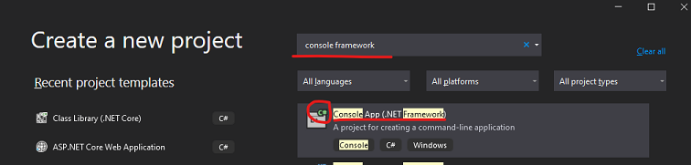

Entity Framework¶
A gyakorlat célja, hogy a hallgatók megismerjék a LINQ lekérdezések használatát, valamint az Entity Framework Core ORM keretrendszer alapvető működését.
Entity Framework Core
A gyakorlat során a .NET 6-ot (régebben .NET Core) és Entity Framework Core 6-ot használjuk, amely már 2016 óta platformfüggetlen, és Linuxos és Mac-en is használható.
A régebbi Entity Framework 6 alapvetően a régebbi .NET Frameworkhöz készült, és ott bevett gyakorlat volt az entitás modellt egy vizuális modell szerkesztő eszközben lehetett karbantartani (EDMX), és ebből C# kódot generálni. Az EF 6-ban az EDMX mellett már támogatott volt a Code-First megközelítés is, ahol EDMX szerkesztés helyett már közvetlenül a C# osztályokat írhattuk. Ezt az EF Core továbbvitte, és most már ez az egyedüli lehetőség (és nem mellesleg kényelmesebb is).
A LINQ lekérdezések tekintetében a két technológia közel azonos élményt nyújt, de apróbb szintaktikai eltérések adódhatnak, illetve az EF Core funkcionálisan már gazdagabb.
Előfeltételek¶
A labor elvégzéséhez szükséges eszközök:
- Microsoft Visual Studio 2022
- Microsoft SQL Server (LocalDB vagy Express edition)
- SQL Server Management Studio
- Adatbázis létrehozó script: mssql.sql
Amit érdemes átnézned:
- C# nyelv
- Entity Framework Core és LINQ
Windows mentes fejlesztés
A labor alapvetően elvégezhető open-source eszközökkel is (VSCode, .NET 6 SDK, MSSQL Linux alapú verziója akár dockerből), de a labor nem ezeket az eszközöket használja.
Gyakorlat menete¶
A gyakorlat végig vezetett, a gyakorlatvezető utasításai szerint haladjunk. Egy-egy részfeladatot próbáljunk meg először önállóan megoldani, utána beszéljük meg a megoldást közösen. Az utolsó feladat opcionális, ha belefér az időbe.
Emlékeztetőként a megoldások is megtalálhatóak az útmutatóban is. Előbb azonban próbáljuk magunk megoldani a feladatot!
Feladat 0: Adatbázis létrehozása, ellenőrzése¶
Az adatbázis az adott géphez kötött, ezért nem biztos, hogy a korábban létrehozott adatbázis most is létezik. Ezért először ellenőrizzük, és ha nem találjuk, akkor hozzuk létre újra az adatbázist. (Ennek mikéntjét lásd az első gyakorlat anyagában.)
Feladat 1: Projekt létrehozása, adatbázis leképzése¶
Hozz létre Visual Studio segítségével egy C# konzolalkalmazást .NET 6 keretrendszer felett (tehát ne a régi .NET Framework alapút).

Hozd létre a projektet, a neve legyen a neptun kódod és a c:\work mappába dolgozz.
-
Hozzuk létre a kiinduló EF Core Code First modellünket. Ehhez most egy úgynevezett Reverse Engineering Code First megoldást fogunk alkalmazni, aminek a lényege, hogy mivel már van egy kiinduló adatbázisunk abból generálunk egy Code-First modellt, de ezután a továbbiakban Code-First módon dolgozunk.
- Telepítsük az EF Core alábbi csomagjait a projektbe a NuGet UI-ról (project jobb gomb / Manage NuGet Packages) vagy a projektfájlba másoljuk be a következőt
- Érdemes a kódot másolni, gyorsabb!
<ItemGroup> <PackageReference Include="Microsoft.EntityFrameworkCore.SqlServer" Version="6.0.8" /> <PackageReference Include="Microsoft.EntityFrameworkCore.Design" Version="6.0.8"> <PrivateAssets>all</PrivateAssets> <IncludeAssets>runtime; build; native; contentfiles; analyzers; buildtransitive</IncludeAssets> </PackageReference> <PackageReference Include="Microsoft.EntityFrameworkCore.Tools" Version="6.0.8"> <PrivateAssets>all</PrivateAssets> <IncludeAssets>runtime; build; native; contentfiles; analyzers; buildtransitive</IncludeAssets> </PackageReference> </ItemGroup>- Futtassuk le az alábbi EF Core PowerShell parancsot a VS-en belül a Package Manager Console-ban, ami legenerálja nekünk az adatbázis kontextust és az entitás modellt, a connection stringbe írjuk bele az adatbázis nevét a 'NEPTUN' helyére:
Scaffold-DbContext 'Data Source=(localdb)\MSSQLLocalDB;Initial Catalog=NEPTUN;Integrated Security=True' Microsoft.EntityFrameworkCore.SqlServer -Context AdatvezDbContext -OutputDir EntitiesEF Core .NET CLI
A továbbiakban is a Package Manager Console-ból elérhető paracsokat fogjuk használni, ami egyébként a
Microsoft.EntityFrameworkCore.Toolscsomaggal települ fel. Ha valaki a konvencionális CLI-t szeretné használni VS-en kívül, az alábbi linken megtalálja a dokumentációt. -
Vizsgáljuk meg a generált code-first modellt.
- Az adatbázis elérése az
AdatvezDbContextosztályon keresztül történik - Adatbázis táblák
DbSettulajdonságokon keresztül érhetőek el. - A kapcsolat konfigurációja az
OnConfiguringmetódusban történik. Éles alkalmazásban ez tipikusan konfigurációs állományból érkezik, ezért is került legenerálásra aAdatvezDbContext(DbContextOptions<AdatvezDbContext> options)konstruktor - Az adatbázis modell az
OnModelCreatingmetódusban került konfigurálásra.
- Az adatbázis elérése az
-
Módosítsunk a modellen
Nevezzük át a
CustomerSiteentitásCustomernavigációs propertyjétMainCustomer-re az entitásban, és azOnModelCreating-ben is. Ez a módosítás az adatbázis sémán nem változtat csupán a code-first modellen.CustomerSite.cspublic virtual Customer? MainCustomer { get; set; }AdatvezDbContext.csprotected override void OnModelCreating(ModelBuilder modelBuilder) { // ... modelBuilder.Entity<CustomerSite>(entity => { // ... entity.HasOne(d => d.MainCustomer) .WithMany(p => p.CustomerSites) .HasForeignKey(d => d.CustomerId) .HasConstraintName("FK__CustomerS__Custo__32E0915F"); }); // ... } -
Módosítsunk az adatbázis sémán - Migrációk
Jelenleg a code-first modellünket scaffoldoltuk a meglévő adatbázisból, de nem szeretnénk a továbbiakban database-first megközelítéssel karbantartani a sémát. Helyette használjunk code-first migrációkat az adatbázis séma módosításához.
-
Hozzunk létre egy kiinduló migrációt
Initnéven, ami a kiinduló sémánkat fogja tartalmazni. A Package Manager Console-ban adjuk ki a következő parancsot.Add-Migration Init -
Próbáljuk meg lefuttatni ezt a migrációt az adatbázison a következő paranccsal.
Update-DatabaseEz értelemszerűen nem sikerül, mert a migrációban lévő utasítások egy üres adatbázishoz képest szeretné migrálni a sémát, viszont nekünk az adatbázisunkban már ez a séma létezik. Az EF egy spoeciális táblában az
__EFMigrationHitory-ban követi azt, hogy melyik migráció van már érvényesítve az adatbázison. -
Vegyük fel most kézzel ebbe a táblába az
Initmigrációt, amivel jelezzük az EF-nek, hogy ez már lényegében lefutott. Figyeljünk oda a migráció nevére, aminek a dátumot is tartalmaznia kell, ezért a Solution Explorerből a fájl nevét másoljuk ki!

-
Módosítsunk az adatbázis sémán a code-first modellünkben.
-
Legyen a
ProductentitásunkPricetulajdonságadoublehelyettdecimal, ami hasznosabb pénzmennyiségek tárolására. Illetve legyen kötelező (nem nullozható).Pruduct.cspublic decimal Price { get; set; } -
Kötelezőséget és az SQL mező pontosságát állítsuk be a
modelBuilderrel, ez egy új sor lesz.AdatvezDbContext.csprotected override void OnModelCreating(ModelBuilder modelBuilder) { // ... modelBuilder.Entity<Product>(entity => { // ... entity.Property(e => e.Price).HasPrecision(18, 2).IsRequired(); // ... } // ... } -
Készítsünk migrációt a változtatásunkról és ellenőrízzük a generált migrációt
Add-Migration ProductPriceDecimal -
Futtassuk le a migrációt az adatbázison és ellenőrízzük a hatását az adatbázisban
Update-Database
-
-
Feladat 2: Lekérdezések¶
A leképzett adatmodellen fogalmazd meg az alábbi lekérdezéseket LINQ használatával. Írd ki konzolra az eredményeket.
Debugger segítségével nézd meg, hogy milyen SQL utasítás generálódik: az IQueryable típusú változóra húzva az egeret látható a generált SQL, amint az eredményhalmaz iterálása elkezdődik.
 A naplózás is bekapcsolható az alábbi paranccsal:
A naplózás is bekapcsolható az alábbi paranccsal:

Feladatok:
-
Listázd azon termékek nevét és raktárkészletét, melyből több mint 30 darab van raktáron!
-
Írj olyan lekérdezést, mely kilistázza azon termékeket, melyből legalább kétszer rendeltek!
-
Készíts olyan lekérdezést, mely kilistázza azokat a megrendeléseket, melyek összértéke több mint 30.000 Ft! Az eredményhalmaz kiírásakor a vevő nevét követően soronként szerepeljenek az egyes tételek (Termék név, mennyiség, nettó ár).
-
Listázd ki a legdrágább termék adatait!
-
Listázd ki azokat a vevő párokat, akiknek ugyanabban a városban van telephelyük. Egy pár csak egyszer szerepeljen a listában.
Megoldás
using ConsoleApp3.Entities;
using Microsoft.EntityFrameworkCore;
Console.WriteLine("***** Második feladat *****");
using (var db = new AdatvezDbContext())
{
// 2.1
Console.WriteLine("\t2.1:");
// Query szintaktika
var productStockQuery = from p in db.Products
where p.Stock > 30
select p;
// Fluent / Method Chaining szintaktika
// var productStockQuery = db.Products.Where(p => p.Stock > 30);
foreach (var p in productStockQuery)
{
Console.WriteLine($"\t\tName={p.Name}\tStock={p.Stock}");
}
// 2.2
Console.WriteLine("\t2.2:");
var productOrderQuery = db.Products.Where(p => p.OrderItems.Count >= 2);
// query szintaktika
//var productOrderQuery = from p in db.Products
// where p.OrderItems.Count >= 2
// select p;
foreach (var p in productOrderQuery)
{
Console.WriteLine($"\t\tName={p.Name}");
}
// 2.3
Console.WriteLine("\t2.3 helytelen megoldás");
var orderTotalQuery = db.Orders.Where(o => o.OrderItems.Sum(oi => oi.Amount * oi.Price) > 30000);
// query szintaktika
//var orderTotalQuery = from o in db.Orders
// where o.OrderItems.Sum(oi => oi.Amount * oi.Price) > 30000
// select o;
//foreach (var o in orderTotalQuery)
//{
// // Ez azért fog elszállni, mert EF Core-ban nincs alapértelmezetten Lazy Loading,
// // így a navigációs propertyk nem lesznek feltöltve
// Console.WriteLine("\t\tName={0}", o.CustomerSite.MainCustomer.Name);
// foreach (var oi in o.OrderItems)
// {
// Console.WriteLine($"\t\t\tProduct={oi.Product.Name}\tPrice={oi.Price}\tAmount={oi.Amount}");
// }
//}
// 2.3 második megoldás
// Include-oljuk a hiányzó navigációs tulajdonságokat.
// Expression alapú Include-hoz szükség van a következő névtér importálására: (CTRL + . is felajánlja a használat során)
// using Microsoft.EntityFrameworkCore;
// Csak egy lekérdezést fog generálni, a Navigation Propertyket is feltölti rögtön
Console.WriteLine("\tc 2.3 helyes megoldás:");
var orderTotalQuery2 = db.Orders
.Include(o => o.OrderItems)
.ThenInclude(oi => oi.Product)
.Include(o => o.CustomerSite)
.Include(o => o.CustomerSite.MainCustomer)
.Where(o => o.OrderItems.Sum(oi => oi.Amount * oi.Price) > 30000);
// query szintaktika
//var orderTotalQuery2 = from o in db.Orders
// .Include(o => o.OrderItems)
// .ThenInclude(oi => oi.Product)
// .Include(o => o.CustomerSite)
// .Include(o => o.CustomerSite.MainCustomer)
// where o.OrderItems.Sum(oi => oi.Amount * oi.Price) > 30000
// select o;
foreach (var o in orderTotalQuery2)
{
Console.WriteLine("\t\tName={0}", o.CustomerSite.MainCustomer.Name);
foreach (var oi in o.OrderItems)
{
Console.WriteLine($"\t\t\tProduct={oi.Product.Name}\tPrice={oi.Price}\tAmount={oi.Amount}");
}
}
// 2.4
Console.WriteLine("\t2.4:");
var maxPriceQuery = db.Products.Where(p => p.Price == db.Products.Max(a => a.Price));
// query szintaktika
//var maxPriceQuery = from p in db.Products
// where p.Price == db.Products.Max(a => a.Price)
// select p;
foreach (var t in maxPriceQuery)
{
Console.WriteLine($"\t\tName={t.Name}\tPrice={t.Price}");
}
// 2.5
Console.WriteLine("\t2.5:");
var cityJoinQuery = db.CustomerSites
.Join(db.CustomerSites, s1 => s1.City, s2 => s2.City, (s1, s2) => new { s1, s2 })
.Where(x => x.s1.CustomerId > x.s2.CustomerId)
.Select(x => new { c1 = x.s1.MainCustomer, c2 = x.s2.MainCustomer });
// query szintaktika
//var cityJoinQuery = from s1 in db.CustomerSites
// join s2 in db.CustomerSites on s1.City equals s2.City
// where s1.CustomerId > s2.CustomerId
// select new { c1 = s1.MainCustomer, c2 = s2.MainCustomer };
foreach (var v in cityJoinQuery)
{
Console.WriteLine($"\t\tCustomer 1={v.c1.Name}\tCustomer 2={v.c2.Name}");
}
}
Feladat 3: Adatmódosítások¶
A DbContext nem csak lekérdezéshez használható, hanem rajta keresztül beszúrások, módosítások és törlések is végrehajthatóak.
-
Írj olyan LINQ-ra épülő C# kódot, amely az "LEGO" kategóriás termékek árát megemeli 10 százalékkal!
-
Hozz létre egy új kategóriát Expensive toys néven, és sorold át ide az összes olyan terméket, melynek ára, nagyobb, mint 8000 Ft!
Megoldás
Console.WriteLine("***** Harmadik feladat *****");
using (var db = new AdatvezDbContext())
{
// 3.1
Console.WriteLine("\t3.1:");
var legoProductsQuery = db.Products.Where(p => p.Category.Name == "LEGO");
Console.WriteLine("\tMódosítás előtt:");
// A ToList, de simán a foreach is adatbázis kérést indukál
foreach (var p in legoProductsQuery.ToList())
{
Console.WriteLine($"\t\t\tName={p.Name}\tStock={p.Stock}\tPrice={p.Price}");
p.Price = 1.1m * p.Price;
}
db.SaveChanges();
Console.WriteLine("\tMódosítás után:");
foreach (var p in legoProductsQuery.ToList())
{
Console.WriteLine($"\t\t\tName={p.Name}\tStock={p.Stock}\tPrice={p.Price}");
}
// 3.2
Console.WriteLine("\t3.2:");
var expensiveToysCategory = db.Categories
.Where(c => c.Name == "Expensive Toys")
.SingleOrDefault();
if (expensiveToysCategory == null)
{
expensiveToysCategory = new Category { Name = "Expensive toys" };
// Erre nem feltetlenul van szukseg: ha van atrendelt termek, ahhoz hozzakotjuk a kategoria entitast
// es bekerul automatikusan a kategoria tablaba is. Igy viszont, hogy explicit felvesszuk, (1) jobban
// kifejezi a szandekunkat; es (2) akkor is felvesszuk a kategoriat, ha vegul nincs atrendelt termek.
db.Categories.Add(expensiveToysCategory);
}
var expensiveProductsQuery = db.Products.Where(p => p.Price > 8000);
foreach (var p in expensiveProductsQuery.ToList())
{
p.Category = expensiveToysCategory;
}
db.SaveChanges();
expensiveProductsQuery = db.Products
.Include(p => p.Category)
.Where(p => p.Category.Name == "Expensive toys");
foreach (var p in expensiveProductsQuery)
{
Console.WriteLine($"\t\tName={p.Name}\tPrice={p.Price}\tCategory={p.Category.Name}");
}
}
Feladat 4: Tárolt eljárások használata¶
Készíts egy tárolt eljárást egy új code first migráción keresztül, amely kilistázza azon termékeket melyből legalább egy megadott darabszám felett adtak el. Hívd meg a tárolt eljárást C# kódból!
-
Készítsd egy új üres migrációt
PopularProducts_SPnéven.Add-Migration PopularProducts_SP -
Hozd létre a tárolt eljárást az alábbi kóddal. A vissza irányú migráció megírásától most tekintsünk el, ahol egyébként törölni kellene a tárolt eljárást.
public partial class PopularProducts_SP : Migration { protected override void Up(MigrationBuilder migrationBuilder) { migrationBuilder.Sql( @"CREATE OR ALTER PROCEDURE dbo.PopularProducts (@MinAmount int = 10) AS SELECT Product.* FROM Product INNER JOIN ( SELECT OrderItem.ProductID FROM OrderItem GROUP BY OrderItem.ProductID HAVING SUM(OrderItem.Amount) > @MinAmount ) a ON Product.ID = a.ProductID"); } protected override void Down(MigrationBuilder migrationBuilder) { } } -
Frissítsd az adatbázist és ellenőrízd az eredményét!
Update-Database -
Hívd meg a tárolt eljárást a kontextus
ProductDbSet-jéről indulva aFromSqlInterpolatedvagyFromSqlRawmetódusokkalMegoldás
Console.WriteLine("***** Negyedik feladat *****"); using (var db = new AdatvezDbContext()) { var popularProducts = db.Products.FromSqlInterpolated($"EXECUTE dbo.PopularProducts @MinAmount={5}"); foreach (var p in popularProducts) { Console.WriteLine($"\tName={p.Name}\tStock={p.Stock}\tPrice={p.Price}"); } }FromSqlInterpolatedvs.FromSqlRawA fenti megoldásban a
FromSqlInterpolatedfüggvénnyel kerül definiálásra a hívás, ahol a nevéből is adódóan az interpolálandó stringet még az EF feldolgozza és az interpolációt nem hagyományosan stringként végzi el, hanemSqlParametereket helyettesít be az SQL injection elleni védelem érdekében.Ezzel szemben a
FromSqlrawfüggvény használata során tilos string interpolációt használni, helyette nekünk kézzel kell azSqlParametereket létrehozni és placeholdereket definiálni az utasításban